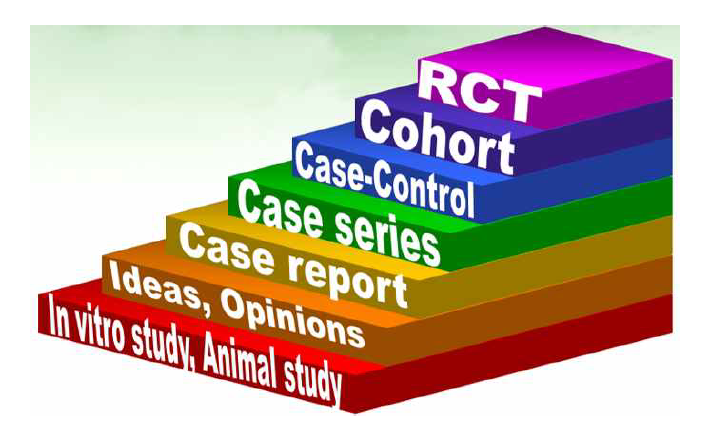
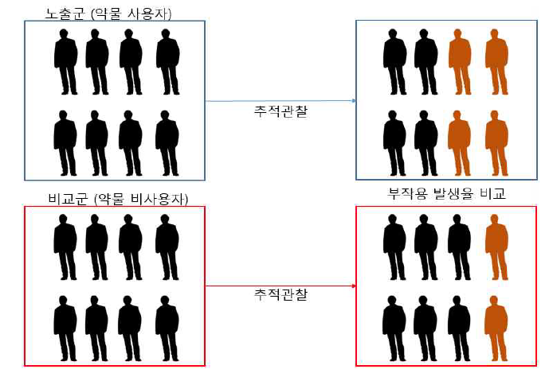
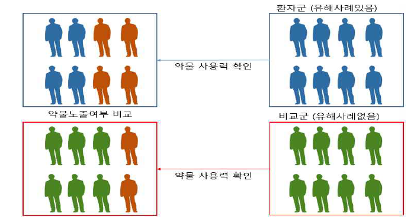

Chapter 5 연구설계
임상진료 현장에서의 진단과 치료에 있어서의 판단, 보건의료 정책 수립에 있어서 정책의 수립과 추진의 판단은 근거를 필요로 한다. 이러한 근거들은 다양한 연구들 에서 구할 수 있는데, 의학연구는 사람을 직접 대상으로 하는지 여부에 따라 임상연 구와 전임상연구로 나눌 수 있다. 임상연구는 사람을 대상으로 하는 연구로서 실험 실적 연구나 동물을 대상으로 하는 연구들보다 높은 근거 수준을 가지며, 환자증례 보고, 환자군연구, 환자-대조군연구, 코호트 연구, 임상시험으로 갈수록 점점 높은 근 거의 위계를 갖는다.

환자증례보고(Case Report)와 환자군연구(Case Series Study)는 가설을 생성하는 단 계의 임상연구이다. 환자증례보고는 기존에 알려져 있지 않은 특이한 질병양상을 보 인 환자의 특성과 치료에 따른 임상경과 및 의심되는 원인에 관하여 보고하는 연구 로서 통계분석을 통한 정량적인 근거 생산을 위한 과정이 포함되지 않는다. 하지만, 환자증례보고는 질병과 치료에 대한 통찰을 제공하고, 이로부터 다양한 가설과 연구 가 파생되는 의학연구의 첫 단계로서 진료와 연구의 가교역할을 담당하고 있다. 본 교재를 통하여 전달하고자 하는 건강보험 자료를 통한 근거생성에는 부합하지 않는 연구설계로 생각된다. 하지만, 독자들이 추후 설계하고 분석할 연구들의 시작이 환자 증례보고에서 출발한 경우가 많을 것이며, 환자증례보고 문헌의 내용을 확인하면 건 강보험 청구자료에서 확인할 수 없는 변수들에 대한 정보를 얻고 추후 자료연계를 통한 연구에서 어떤 변수들을 더 보완하여야 하는지에 대한 정보를 구할 수 있을 것 이다.
환자군연구는 동일한 질병을 가진 환자들을 모아서 특성을 요약하고, 주요 특성에
따른 임상경과를 비교함으로써 질병의 원인에 관한 정량적 가설을 수립하는 후향적 연구설계이다. 환자증례보고가 사과를 맛보는 단계의 연구라면, 환자군연구는 사과를 분류하고 특성을 세어보는 연구설계라고 할 수 있다. 임상에서는 주로 어떤 질병을 진단받고 이미 치료를 받았던 환자들을 병원의무기록을 이용하여 후향적으로 찾아낸 후 환자들의 공통점을 파악하거나, 과거에 치료받았던 내용들을 비교하여 치료방법 들 간 치료효과의 차이에 관한 가설을 제기하는데 활용하고 있다. 후향적이라는 특 성을 고려할 때 단 시간에 효율적으로 질환에 대한 연구를 수행할 수는 있고, 특정 한 환자들의 특성에 따라 어떤 질환, 또는 약물의 사용 양태를 정량적으로 기술하는 것 자체가 목적일 때에는 유용할 수 있으나, 대조군이 없기 때문에 환자증례보고를 통하여 질병발생의 원인에 대한 근거가 확립되기는 어렵다. 하지만, 분석적인 관찰연 구를 계획할 때, 연구대상수 산출 등 필수적인 정량적인 가설이 환자군 연구를 통하 여 만들어질 수 있기 때문에, 많은 경우 인과관계 정립의 과정에서 중간단계로 활용 되고 있다.
위 그림의 근거위계 피라미드에서 가장 꼭대기에는 임상시험이 있지만, 건강보험 청구자료를 활용할 때 쓸 수 있는 설계가 아니므로 이를 논외로 할 때, 환자-대조군 연구와 코호트연구가 건강보험 청구자료를 활용하여 가장 상위의 진료와 정책의 근 거를 만들어 낼 수 연구설계가 된다. 이 두 연구설계 중에서도 코호트연구가 환자- 대조군연구에 비하여 상위에 있는데, 이는 비뚤림(bias)의 발생을 방지할 수 있는 방 법론적인 수단이 코호트연구설계에 더 잘 확보되어 있고 코호트연구만의 장점이 있 기 때문이다. 따라서, 환자-대조군연구를 통하여 노출요인과 질환사이의 관련성이 밝 혀진 경우에도 코호트연구를 수행하여 부가적으로 더 많은 근거를 얻을 수 있다. 임 산부의 DES (diethylstilbestrol) 노출에 따른 질선암 관련성은 암이 잘 발생하지 않는 소아 청소년기 여성에서 질선암(vaginal adenocarcinoma) 사례 보고에서 시작되었다. 비슷한 시기에 진단된 젊은 여성의 질선암 사례 수집을 통하여 DES노출이라는 공통 점 파악하고 가설을 생성하였고, 환자군 8명과 대조군 32명을 모집한 환자-대조군연 구를 통하여 DES와 질선암의 관련성 입증하였다.5) 같은 사실을 코호트연구를 통하 여 증명하고자 1940~1960년 대 임신 중 DES를 복용한 여성의 딸 3,000 여명을 대상 으로 코호트를 구축하고 4년간 추적관찰하였으나 1979년까지 질선암 증례 발견하지 못하였다.6) 이에 DES 노출군 4,536명과 DES 비노출군 1,544명으로 코호트를 확장하 고 추적관찰기간을 1994년까지 늘려서 DES 노출군에서만 질선암 3례 발생 확인하여 유의한 관련성과 함께 노출에 따른 발생율을 제시하였다.7) 본 장에서는 환자증례보 고와 환자군연구를 통하여 생성된 가설을 확증하기 위한 분석적 관찰연구 설계의 특 징을 설명하고 실제 수행사례를 살펴보고자 한다.
5.1 코호트 연구
코호트연구는 연구대상이 되는 질환을 경험하지 않은 사람을 연구대상으로 선정한 다음, 질병발생의 원인으로 가정한 요인의 노출상태에 따라 연구대상 인구집단을 구 성하고, 이들을 일정 기간 동안 추적관찰하여 특정 질병의 발생여부를 확인하여 요 인의 노출과 질병 발생의 인과적 연관을 밝히는 연구방법이다 [그림 4-2]. 대상의 선 정과 추적관찰기간, 그리고 발생율지표에 따라서 분류하면, 모든 구성원이 연구시작 시점에 한꺼번에 선정되고 일정기간을 추적관찰 후 같은 시점에 관찰을 종료하여 누 적 발생률(Cumulative Incidence)을 발생율의 지표로 활용하는 고정 코호트(Fixed cohort)와 대상 선정시점, 종료시점이 다르고 따라서 추적관찰기간이 제각기 다르기 때문에 평균발생률(Incidence Density)을 발생율의 지표로 이용하는 들고나는 코호트 (Dynamic cohort)로 나눌 수 있다. 전자는 사고로 인한 유해물질에 대한 대규모 폭로 가 이루어진 상황에서 그 건강영향을 평가하는 연구로 적절하며, 후자는 대부분의 지역사회 기반의 질병 코호트연구들에 해당하는 형태라 하겠다. 또한, 질병이 발생하 기 전 대상을 모집한 후 추적 관찰하여 질병발생을 확인하는 경우를 전향적 코호트 연구, 질병이 발생한 시점에 대상자들을 모집하여 이전의 노출정보를 활용하여 노출 여부에 따른 위험을 분석하는 코호트연구를 후향적 코호트연구라 한다.
건강보험자료를 이용하면 고정 코호트 형태의 분석도 가능하고, 들고나는 코호트 형태의 분석도 수행이 가능하다. 또한, 전향적 코호트연구도 가능하고 후향적 코호트 연구도 가능하다. 하지만, 많은 경우 건강보험 청구자료의 장점을 가장 잘 살리는 접 근이라 할 수 있는 후향적 코호트연구를 수행하는 경우가 많으며, 질병에 대한 코호 트분석이기 때문에 들고나는 코호트 분석이 주로 수행된다. 장기간의 자료에서 관찰 하고자 하는 코호트 구성원이 되려면 질병발생 가능성(Disease potential)이 있어야 한다. 이는 연구하고자 하는 질환이 걸려있지 않음을 의미하기도 하며, 해당질환이 걸릴 수 있는 가능성이 있어야 한다는 뜻이다. 가령 위절제를 받은 사람이 위출혈을 관찰하는 코호트연구의 대상이 될 수 없으며, 여성은 전립선암의 발생을 관찰하는 코호트연구의 대상자가 될 수 없을 것이다. 건강보험 청구자료를 활용하면 이러한 조건들이 쉽게 확인되어 선정제외기준으로 작용하여 코호트연구 대상자를 선정할 수 있게 된다. 또한 요인 폭로정보(Exposure data) 수집이 진단 및 처방 데이터를 활용 하여 효율적으로 이루어 질 수 있다. 따라서 입적된 대상자들을 요인 노출군과 비노 출군으로 나누고, 추적관찰하여 질병 발생률을 산출하고, 군간의 발생율을 비교하여 위험요인 폭로와 질병발생 간 관련성 평가할 수 있게 된다.

코호트연구의 장점은 위험요인의 노출과 관련하여 두드러진다. 위험요인에 관한 정보를 연구대상(질병)이 발생하기 전에 파악하기 때문에 환자-대조군연구처럼 환자 의 기억에 의존하지 않으므로 더욱 정확하게 파악할 수 있으며, 동시에 위험요인과 질병 발생간의 시간적인 선후관계가 명확하기 때문에 인과관계의 평가에 더욱 유리 하다. 특히, 질병발생 전의 생화학적 자료 수집이 가능하며, 요인 노출 자료를 후향 적 혹은 간접적으로 획득하는 경우 신빙성이 의문시될 때 유용한 설계라 할 수 있 다. 또한, 요인폭로에 대한 반복조사 혹은 측정이 가능하다. 노출요인에 대한 타당한 측정 자료를 활용하여 특정 요인의 노출로 인하여 발생할 수 있는 다양한 건강결과 를 함께 파악할 수 있으며, 일반 인구집단에서처럼 특정 위험요인에 대한 노출빈도 가 높지 않은 경우에도 충분한 검정력을 갖도록 설계하여 적용할 수 있다. 코호트연 구를 수행하면 위험요인 노출에 따른 질병발생의 상대위험도뿐만 아니라 절대위험 도, 기여위험도도 산출이 가능하여 임상적 판단뿐만 아니라 정책적인 판단을 돕는 근거로 활용할 수 있다. 하지만, 결과변수 확인과 관련하여 많은 단점을 갖고 있는 것도 사실이다. 코호트연구는 발생률이 낮은 질병과 특정 위험요인간의 관련성을 밝 히고자 하는 경우에는 대규모의 연구대상을 필요로 하여 연구수행 가능성이 떨어진 다. 특정 위험요인에 노출된 사람들을 대상으로 발생률이 낮은 장기간에 걸친 추적 관찰을 통하여 관찰하려면, 연구대상자뿐 아니라 연구자의 중도탈락이 문제가 되며, 추적관찰 기간 중도탈락이 많거나 선택적으로 특정 집단에서 일어나는 경우 비뚤림 이 심각해진다. 또한 추적 관찰하는 기간 동안에 연구대상 위험요인에 대한 노출량 과 강도가 변하는 것을 정확하게 측정하는 것은 여러 차례 방문과 측정이 필요하여 실제 수행하는 것이 매우 힘들며, 건강결과의 발생 여부를 파악하는데 많은 시간과 비용이 필요하다. 후향적 연구의 경우 시간이 단축되나 관련 자료의 과거 기록이 편 중 혹은 일부만 있을 경우 비뚤림이 발생할 소지가 있다는 점들은 코호트연구의 단 점이다
건강보험 청구자료를 이용한 코호트연구는 이러한 단점들로부터 비교적 자유롭다 고 할 수 있다. 하지만, 현재의 건강보험자료는 생활습관과 관련된 인자, 주요 임상 검사의 결과 및 질병의 중등도와 관련된 정보가 부재하기 때문에 측정되지 않은 교 란요인으로 인한 문제가 단점으로 지적되고 있다. 본 연구의 수행은 자료연계를 통 한 분석의 활성화를 가져올 것이고, 결과적으로 이러한 문제를 극복할 수 있는 방안 을 찾을 것으로 기대할 수 있다.
5.2 환자-대조군 연구
환자-대조군연구는 특정 질병을 가진 환자군과 그런 질병을 가지지 않은 대조군을 선정한 후, 과거의 특정 요인 노출 정도를 두 군 사이에 비교를 통하여 요인과 질병 사이의 인과적 연관성을 밝히는 연구설계이다 [그림 4-3]. 여기서 환자(case)라 함은 연구과정에 연구진이 확인할 수 있는 조건들에 입각하여 명백히 정의되는 것으로, 임상진료에서 확진을 위하여 활용하는 검사를 연구에서는 활용하지 않을 수도 있기 때문에 임상적인 의미의 환자와는 차이가 있을 수 있다. 이러한 차이의 정도는 연구 에 할당되는 재원, 연구 대상자들이 환자인지 여부를 확인하는 세팅, 연구에 할당된 시간 등에 따라 달라질 수 있다. 계획단계에서는 연구결과의 활용을 고려하며 연구 수행 여건상실무적으로 정의가 가능한 환자의 정의를 수립하는 것이 중요한 첫 단계 가 된다. 건강보험 청구자료에 환자는 주로 진단명과 처방약물에 기반하여 이루어진 다. 하지만, 경우에 따라서는 ‘질환으로 인하여 입원치료를 받은 환자’와 같이 특 정한 임상적 상황을 만족하는 환자로 정의될 수 있으며, 보험제도에서 부여하는 산 정 특례 기준을 만족하여 해당 코드를 갖고 있는 환자 등으로 정의될 수도 있다.

질병의 원인을 밝히는 환자-대조군연구를 설계할 때 환자는 새로 질병이 발생한 환자로 정의하는 것이 바람직하다. 만약, 새로 질병이 발병하지 않은 경우를 포함하 여 환자를 정의하였다고 가정하여 보자. 분석 결과 특정 인자가 이 질병과 연관이 있다고 하였을 때, 이 인자가 질병을 일으키는 요인일 수도 있으나 질병이 걸리고 나서 환자가 생존하도록 해주는 요인일 수도 있다. 따라서 연구의 목적이 명확히 질 병 발생의 원인을 확인하고자 할 때는 환자를 새로 질병이 생긴 환자를 대상으로 하 는 것이 바람직하다. 이렇게 확인된 환자군에 비교할 대조군을 정의하고 양군에서 폭로의 정도를 비교하는 것이 환자-대조군연구라고 하였다. 코호트연구에서는 발생 율을 구하고 군간의 발생율비로 연관성의 강도를 제시한다고 하였는데, 환자-대조군 연구는 오즈비 (odds ratio)로 연관성의 강도를 제시한다. 노출의 확률비로 오즈를 구 하고, 오즈의 비로 연관성을 나타내기 때문에 환자-대조군연구의 결과가 타당한 것 이 되기 위해서는 환자군은 연구대상 질환자들을 대표할 수 있어야 하고, 대조군은 비질환자들을 대표할 수 있어야 한다. 또한, 환자군은 대조군과 필요한 정보의 수집 과정이 동일해야 한다. 가령, 환자군에 대해서 조사원이 더 꼼꼼히 요인 폭로정보를 수집하게 된다면, 또는 환자군의 대상자가 자신의 질병의 원인에 대한 관심으로 인 하여 더 상세한 요인 폭로정보 제공을 하는 경향이 있게 된다면 연구 결과는 비뚤릴 수 밖에 없게 된다. 이러한 상황을 방지하게 위하여 조사원과 연구대상자들을 연구 가설에 대해서 눈가림이 되도록 하며, 환자군과 대조군에서 같은 자료 수집도구를 활용할 수 있도록 준비한다. 연구가설의 군간 비교를 쉽게 하기 위해서는 연구계획 단계에서 교란변수 분포가 환자군과 대조군에 동일하게 만들어 주는 것이 바람직하 다. 환자-대조군연구의 어려움으로 적절한 대조군을 선정하는 것을 들 수 있는데, 이 러한 교란변수의 분포와 대조군 선정의 어려움을 동시에 해결해 주는 방법으로 짝짓 기를 꼽을 수 있다. 이상적으로는 모든 교란변수가 균형을 이루는 것을 생각할 수도 있으나, 짝짓기의 조건을 너무 엄격하게 하면 짝을 찾지 못하고 탈락하게 되는 대상 자가 너무 많아지기 때문에 대부분 분석에서는 성별, 연령 5세 간격, 그리고 주된 질 환 등 2-4개 정도의 변수에서 짝짓기를 하게 된다. 짝짓기에는 환자군 전체의 교란 변수의 분포가 대조군 전체의 교란변수의 분포와 동일하도록 하는 빈도 짝짓기 (frequency matching), 그리고 환자군 한 명에 대조군을 하나 혹은 둘 이상씩 짝짓는 개별 짝짓기(individual matching)가 있다. 짝짓기의 비율은 경험적으로 비용 노력에 비하여 검정력의 증가정도를 고려하여 1:4정도를 권하고 있지만 건강보험 청구자료 를 이용할 때는 환자 1명에 대조군 4명을 초과하는 짝짓기도 종종 이루어지곤 한다. 코호트 연구에 비해 대상 수의 규모가 작아 작은 경비로 빠른 시간에 결론을 도출 할 수 있다는 것은 환자-대조군연구 연구의 가장 큰 장점이다. 비교적 드물게 발생 하는 건강결과와 관련된 위험요인을 파악하는데 유리하고, 단일 질병에 대해 여러 가지 위험요인을 동시에 검정할 수 있고, 비교적 희귀한 질환이나 긴 잠복기를 가지 는 질병의 연구에 적용하여 효율적으로 결론을 도출할 수 있다. 따라서 앞서 살펴보 았던 DES와 질선암의 예에서와 같이 보건학적으로 중요한 문제에 대해서 빠른 답을 필요로 할 때 가장 먼저 고려하여야 할 연구설계이다. 하지만, 환자-대조군연구는 위 험요인에 노출된 사람이 매우 적은 경우에는 연구대상 또한 노출이 많지 않을 것이 고 결과적으로 환자군과 대조군 모두에서 노출이 없을 것이기 때문에 적용하기 어렵 다. 과거에 노출된 위험요인에 관한 정확한 정보를 파악하는 것은 쉽지 않아서 정보 비뚤림이 발생하기 쉽고, 원인의 폭로 정도가 매우 낮은 질환인 경우 폭로자가 환자 군과 대조군 모두 0이 될 수도 있기 때문에 이런 경우 수행하다고 하여도 결론에 도 달할 수 없다. 또한 특정한 위험요인을 대상으로 하여 위험요인에 노출된 사람에서 특정 건강결과의 발생을 관찰하는 연구가 아니고, 이미 건강결과가 발생된 환자로부 터 과거에 경험한 위험요인에 관한 정보를 파악하는 연구이기 때문에 특정 요인에 따른 건강결과의 발생률을 직접 산출할 수는 없다. 하지만, 무엇보다 어려운 점은 적 절한 대조군을 선정하는 것과 관련된 문제이다. 건강보험 청구자료를 이용할 때는 질환이 없는 사람 전체 목록을 이용한 무작위추출 또는 짝짓기가 가능하기 때문에 비교적 대조군 선정의 문제를 수월하게 진행할 수 있다. 하지만, 선택비뚤림의 가능 성과 관련된 이슈는 코호트연구에서와 달리 환자-대조군연구에서 특히 문제가 된다. 이 때문에, 건강보험 청구자료를 활용한 후향적 코호트연구가 가능한 주제라면 환자-대조군연구보다는 코호트연구가 비뚤림의 가능성이라는 측면에 있어서 우선적으로 고려될 수 있다. 하지만, 건강보험 청구자료를 이용하여 코호트 보다는 환자-대조군 연구설계가 더 적절한 상황들이 있다. 가령, 신생아기 감염과 약물사용에 따른 소아 기 질병 발생을 파악하는 코호트의 구축은 신생아기 연령자료의 부정확성으로 인하 여 쉽지 않기 때문에, 결과적으로 질환 발생 소아와 대조군 소아를 비교하는 환자- 대조군연구 설계가 가능할 것이다.